/// ACT17_VOLATILITY
> INF_CRIM // ACTIVIDAD_17 // RAM_DUMP_ANALYSIS...
Profesor: Servando Lopez Contreras
Jesús Israel Martínez Escobedo - 175325
La memoria del crimen: extracción de evidencia de un volcado RAM
Informática Criminológica
Ingeniería en Tecnologías de la Información
Universidad Politécnica de San Luis Potosí
14 de noviembre de 2026
Objetivo
Analizar el volcado de memoria RAM del equipo de un presunto cibercriminal autodenominado "Morty" con la herramienta Volatility, para extraer evidencia digital (sistema, credenciales, red, procesos, correos y criptomonedas) y relacionarla con las hipótesis de la investigación.
La memoria volátil guarda información que se pierde al apagar el equipo y que muchas veces no existe en el disco: contraseñas en texto claro, conexiones activas, procesos en ejecución y sesiones abiertas. Por eso su análisis es clave en investigaciones de cibercrimen.
Evidencia: OtterCTF.vmem (≈2 GB), proporcionada por la FGM
Sospechoso: alias "Morty", vinculado a Reddit y a un grupo secreto de Telegram
Indicios previos: usuario "Ricky", grupo "S0_Just_M0v3_Socy", iniciales FAF3 (SEDENE) y TFE (CNDI)
Evidencias a cotejar: EV455FGM (IP y sistema operativo) y EV456FGM (contraseña / correos)
Herramientas: Volatility Framework 2.6 (standalone), Strings de Sysinternals, findstr
Sistema de análisis: Windows
Metodología
El análisis se dividió en cinco fases, de la preparación del volcado a la extracción de la cartera de criptomonedas:
- Unión de 7 partes con WinRAR
- Obtención de OtterCTF.vmem
- imageinfo: perfil Win7SP1x64
- hashdump (SAM)
- lsadump (secretos LSA)
- hivelist y printkey
- netscan: IPs y puertos
- pstree: árbol de procesos
- Geolocalización de IP
- strings sobre el volcado
- findstr por dominios
- Sesión de webmail
- procdump del PID 3720
- strings -u del ejecutable
- Verificación en listas negras
Al extraer el proceso 3720, Windows Defender eliminó el ejecutable por detectarlo como malware. Se agregó una exclusión temporal solo para la carpeta de salida y el archivo nunca se ejecutó: únicamente se leyeron sus cadenas (análisis estático). Al terminar se borró la carpeta y se quitó la exclusión.
Resultados
Parte I // Sistema y credenciales
Información del equipo y del usuario obtenida del volcado.
Marca de tiempo local
19:34:22 UTC. Zona horaria UTC+3, congruente con el país «IL» (Israel) del perfil de correo.
Sistema operativo
Perfil Win7SP1x64, arquitectura AMD64, 2 procesadores.
Contraseña del perfil Rick
Secreto LSA DefaultPassword (inicio de sesión automático). Hash NTLM: 518172d012f97d3a8fcc089615283940.
IP del equipo
IP privada de origen de todas las conexiones salientes.
Colmenas del Registro
Además de DEFAULT, HARDWARE, BCD y el ntuser.dat / UsrClass.dat del usuario Rick.
Nombre del equipo
Contiene las iniciales FAF3 (SEDENE) y TFE (CNDI): vincula el equipo con el caso.
Parte II // Procesos, red y comunicaciones
Rick And Morty (PID 3820)
Lanzado por el usuario; 7 segundos después inicia vmware-tray.exe (PID 3720), el ransomware disfrazado. Probable troyano descargado por torrent.
LunarMS.exe (PID 708)
Cliente de los «servidores Lunar» (TFE) usados para publicitar a las víctimas; se conecta al servidor remoto en Londres.
BitTorrent.exe (PID 2836)
Decenas de conexiones P2P internacionales: los servicios Torrent usados para enviar los videos de las víctimas.
Servidor malicioso
Londres, Inglaterra, Reino Unido. ISP Virgin Media Limited (conexión residencial).
Correos empleados
rickypinky@mail.com
Webmail Mail.com, abierto en Windows con Google Chrome 68.0.
Cartera del rescate
El ransomware vmware-tray.exe pide 0.16 BTC. BTC Black fuera de servicio (404); sin reportes en Chainabuse.
- Solicitar a Virgin Media el titular de la IP 77.102.199.102 en la fecha y hora del volcado.
- Solicitar a Mail.com la preservación y los datos de acceso de ambas cuentas para identificar a otras víctimas (como GTH).
- Rastrear la cartera BTC en la blockchain hacia exchanges y reportarla en Chainabuse.
- Recuperar archivos .torrent y analizar la memoria de LunarMS.exe para identificar más integrantes de la red.
- Analizar el ransomware en un entorno aislado (sandbox) y obtener sus hashes como indicadores de compromiso.
Evidencias
Capturas de pantalla de cada comando ejecutado, en orden.
01 // imageinfo: perfil y marca de tiempo
vol.exe -f OtterCTF.vmem imageinfo
Perfil sugerido Win7SP1x64 y fecha local 2018-08-04 22:34:22 +0300.
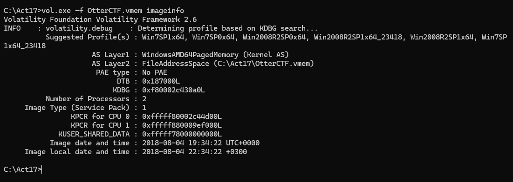
02 // hashdump: usuarios y hashes
vol.exe -f OtterCTF.vmem --profile=Win7SP1x64 hashdump
El único usuario real es Rick (RID 1000); Administrator y Guest tienen contraseña vacía.
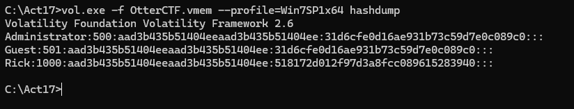
03 // lsadump: contraseña en texto claro
vol.exe -f OtterCTF.vmem --profile=Win7SP1x64 lsadump
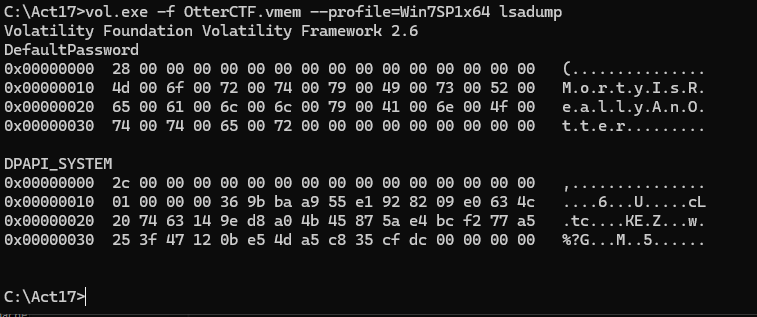
04 // netscan: IP local
vol.exe -f OtterCTF.vmem --profile=Win7SP1x64 netscan
Todas las conexiones salen de la IP 192.168.202.131.
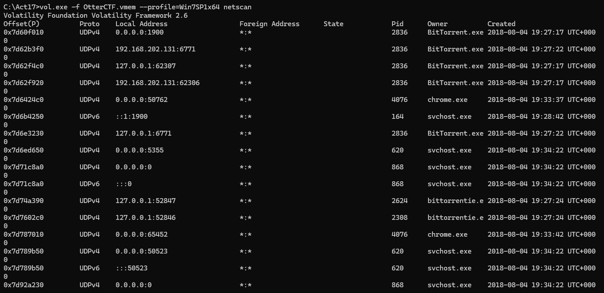
05 // netscan: servidor malicioso
LunarMS.exe (PID 708) se conecta de 192.168.202.131:49530 a 77.102.199.102:7575.
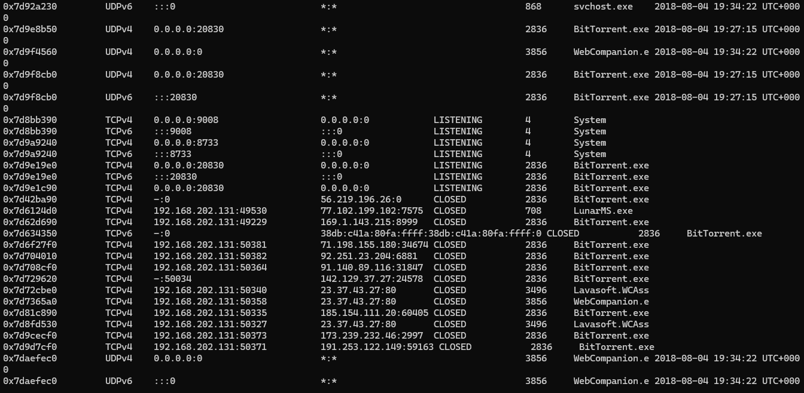
06 // Geolocalización del servidor
La IP 77.102.199.102 se ubica en Londres, Reino Unido, con el ISP Virgin Media Limited.
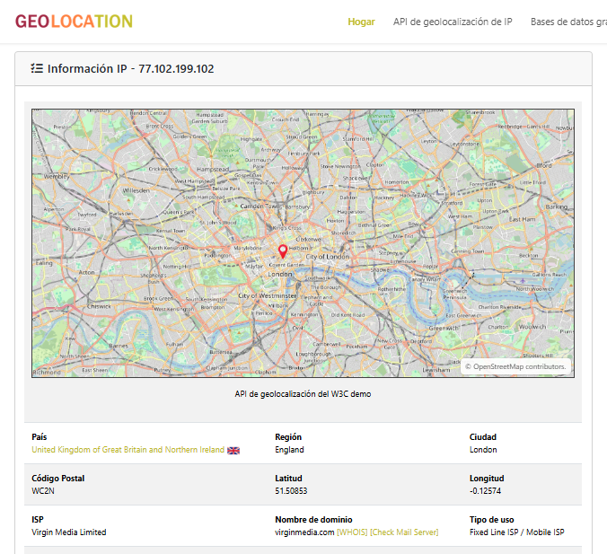
07 // hivelist: colmenas del Registro
vol.exe -f OtterCTF.vmem --profile=Win7SP1x64 hivelist
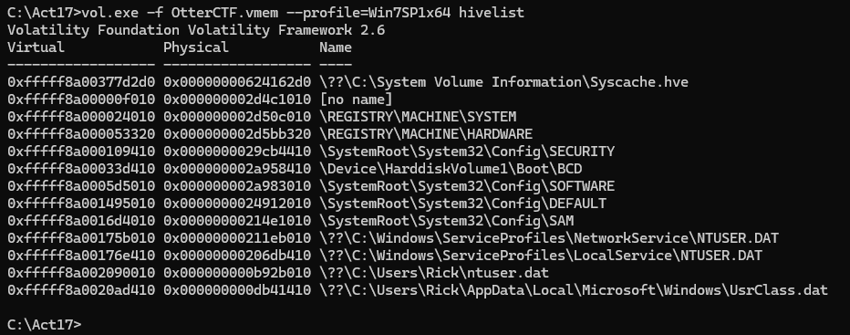
08 // printkey: nombre del equipo
vol.exe -f OtterCTF.vmem --profile=Win7SP1x64 printkey -K "ControlSet001\Control\ComputerName\ComputerName"
El equipo se llama WIN-LO6FAF3DTFE.
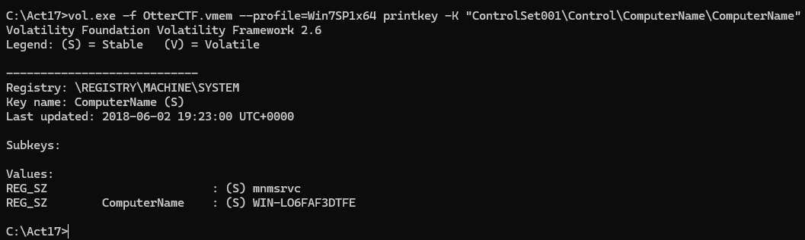
09 // pstree: árbol de procesos
vol.exe -f OtterCTF.vmem --profile=Win7SP1x64 pstree
Rick And Morty (3820) lanza a vmware-tray.exe (3720); también se observan LunarMS.exe, BitTorrent.exe y chrome.exe.
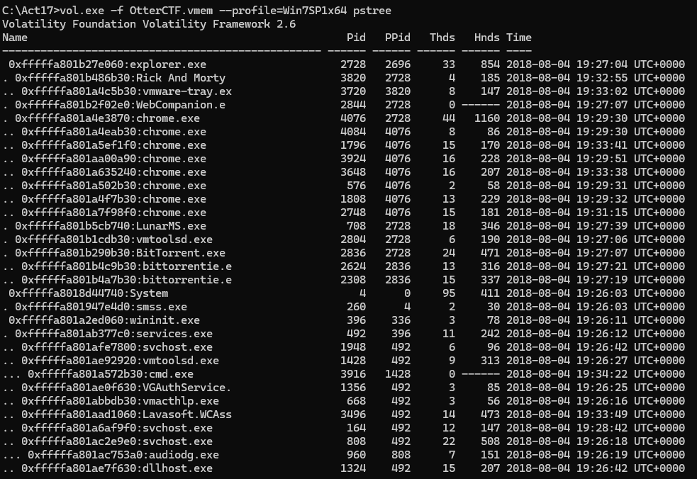
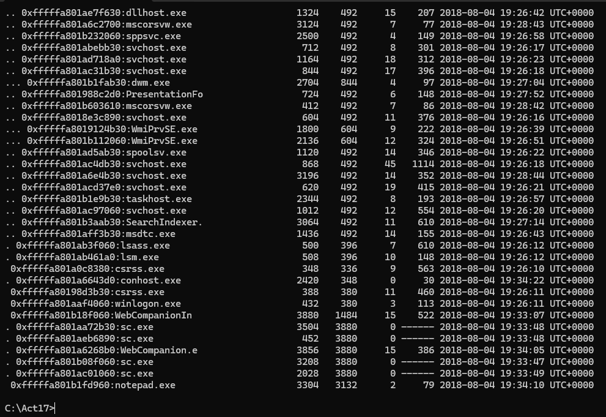
10 // strings: correos electrónicos
strings64.exe -nobanner -n 6 OtterCTF.vmem | findstr /I "@gmail.com @hotmail.com @outlook.com @yahoo.com @protonmail @mail.com @live.com" > correos.txt
sort /unique correos.txt
Aparecen rickopicko@mail.com y rickypinky@mail.com, y la sesión de Mail.com con Chrome 68 en Windows.
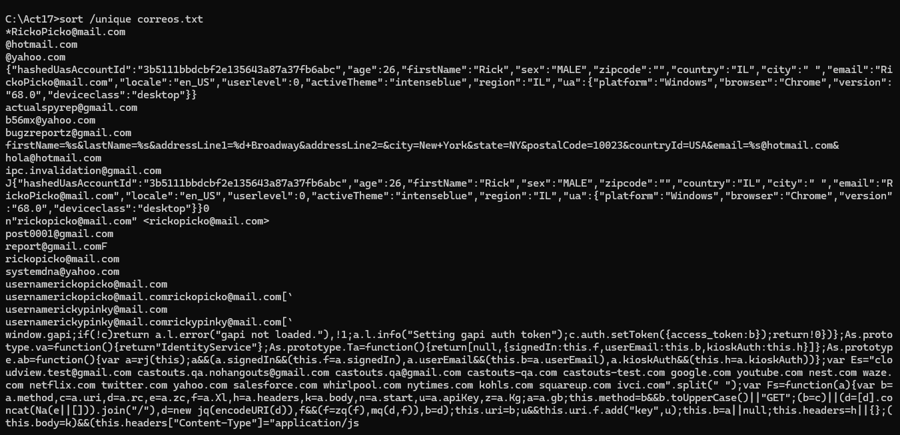
11 // procdump: extracción del proceso 3720
vol.exe -f OtterCTF.vmem --profile=Win7SP1x64 procdump -p 3720 -D salida
Se extrajo el ejecutable de vmware-tray.exe como executable.3720.exe.
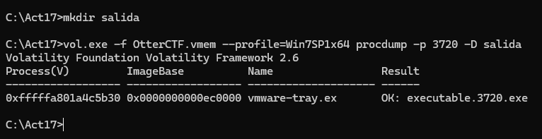
12 // strings: cartera del rescate
strings64.exe -nobanner -u salida\executable.3720.exe > ransom.txt
findstr /N /I "address encrypted bitcoin 1Mmp" ransom.txt
Mensaje: 1MmpEmebJkqXG8nQv4cjJSmxZQFVmFo63M (0.16 BTC).
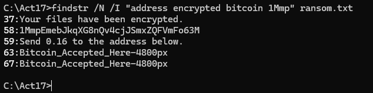
13 // Verificación en listas negras
BTC Black no responde, ERROR 404 en la pagina no encontrada; en Chainabuse la cartera no tiene reportes.
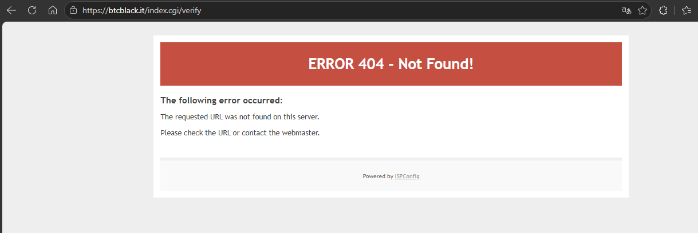
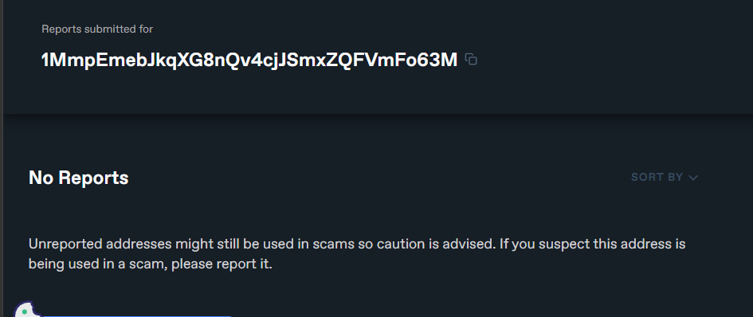
Entregables
PDF de la actividad.
Conclusión
La práctica permitió comprender el valor del análisis de memoria volátil: con Volatility se obtuvo evidencia que no está en el disco o que es muy difícil de recuperar, como contraseñas en texto claro, conexiones de red, procesos en ejecución y sesiones de correo abiertas.
Se identificó el equipo WIN-LO6FAF3DTFE (Windows 7 SP1 x64, IP 192.168.202.131), el usuario Rick con contraseña MortyIsReallyAnOtter, la conexión al servidor Lunar en Londres, el uso de BitTorrent, los correos de Mail.com y la cartera del ransomware. Estos hallazgos coinciden con las hipótesis del caso (Morty/Ricky, FAF3 y TFE, servidores Lunar y servicios Torrent).
Finalmente, la actividad reforzó la importancia de manejar el malware con cuidado (análisis estático, sin ejecutar binarios), de documentar cada comando y de correlacionar los resultados técnicos con la investigación para proponer líneas de acción concretas.